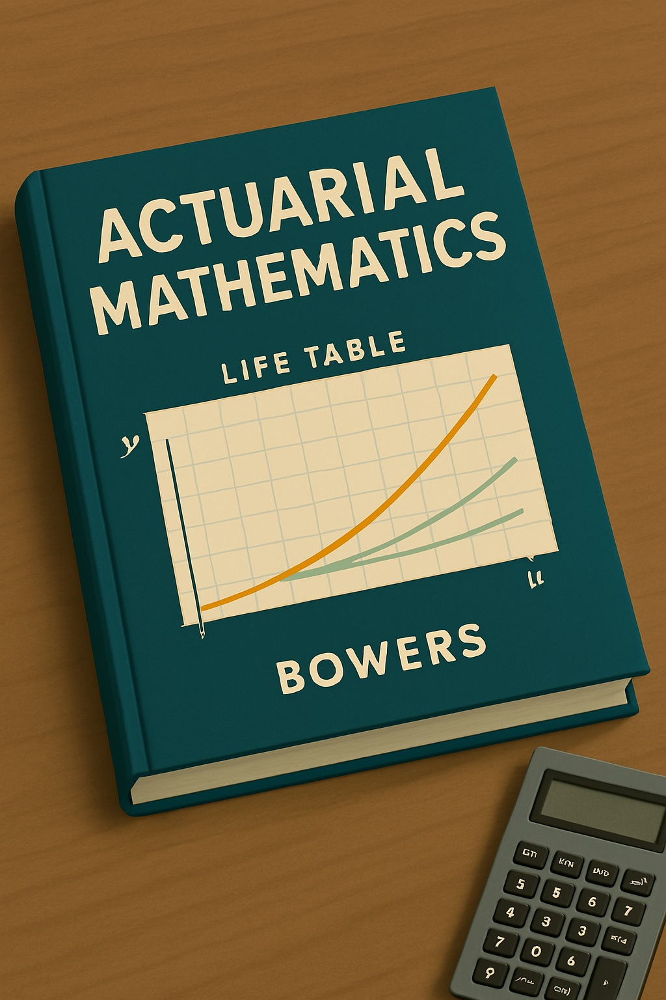
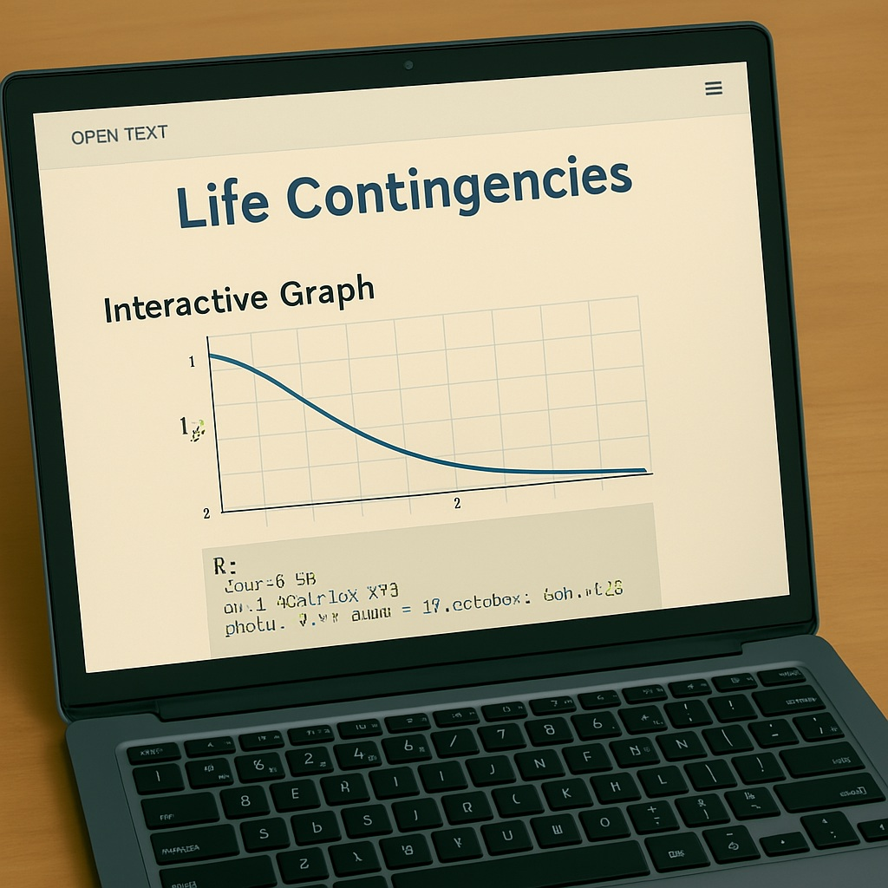

보험계리 수학 교재는 보험계리학의 발전을 반영합니다. SOA 발간 교재를 중심으로, 18세기 기본부터 21세기 AI 통합까지의 진화를 탐구합니다.
18~19세기 초기 교재는 Richard Price의 1771년 《Observations on Reversionary Payments》로, 기본 생명표와 우발성을 도입하였습니다.
20세기 중반 Chester Wallace Jordan의 《Life Contingencies》(1952 초판, 1967 2판)는 deterministic 모델 중심으로, 사망률 테이블을 업데이트하였습니다.
1980~1990년대 Newton L. Bowers 등의 《Actuarial Mathematics》(1986 초판, 1997 2판)는 stochastic 모델을 도입하였습니다.
그림 9.1: Actuarial Mathematics, 1986
2000~2010년대 David C. M. Dickson 등의 《Actuarial Mathematics for Life Contingent Risks》(2009 초판, 2020 3판)는 emerging cash flows와 빅데이터를 포함하였습니다.
2020년대 오픈 텍스트(예: openacttextdev.github.io의 Life Contingencies)는 AI 모델링과 ESG를 통합합니다.
그림 9.2: Life Contingencies 오픈 텍스트, 2020s
이 변천사는 보험계리학의 성장 스토리입니다. SOA는 매 10~15년 업데이트로 산업 변화를 반영합니다.
| 시기 | 주요 교재 | 설명 | SOA와의 연관성 |
|---|---|---|---|
| 18~19세기 | Richard Price의 1771년 교재 | 기본 생명표, annuity 모델 | SOA 뿌리, 교육 체계화 |
| 1950s-1960s | Jordan의 Life Contingencies (1952) | Deterministic 모델, CSO 테이블 업데이트 | 시험 표준, 통계 접근 강화 |
| 1980s-1990s | Bowers 등의 Actuarial Mathematics (1986) | Stochastic 모델, 컴퓨터 반영 | MLC 시험용, 팬데믹 리스크 업데이트 |
| 2000s-2010s | Dickson 등의 AMLCR (2009) | Embedded options, 빅데이터 통합 | FAM 시험 적합, 2022 커리큘럼 반영 |
| 2020s | 오픈 텍스트 Life Contingencies | AI·ESG 포함, 온라인 실습 | 지속 업데이트, 디지털 교육 |